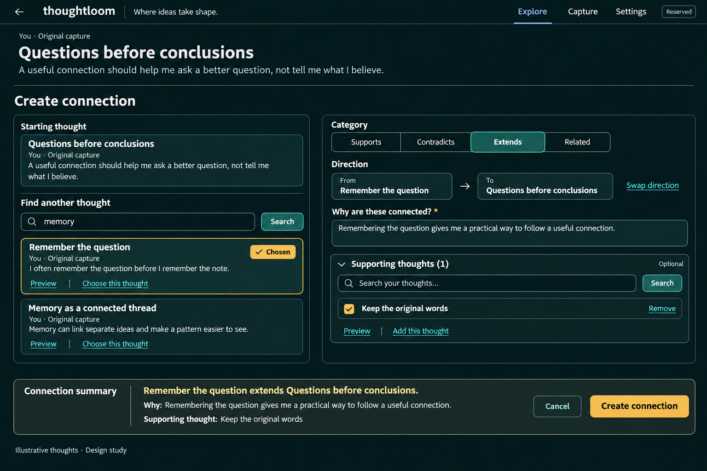
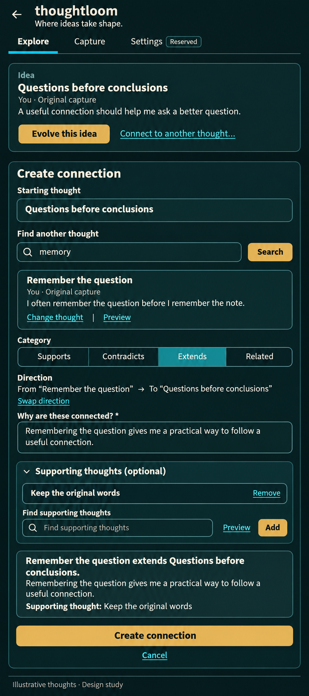
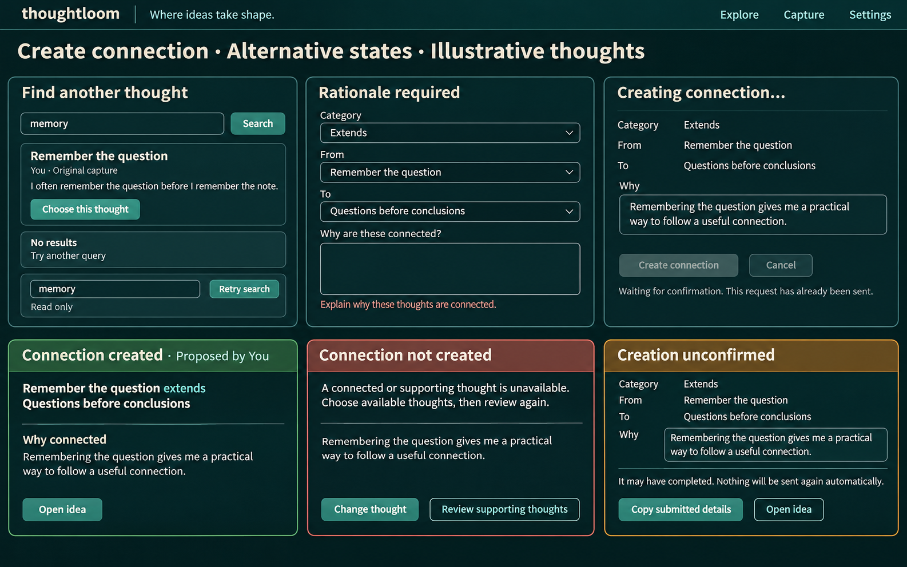
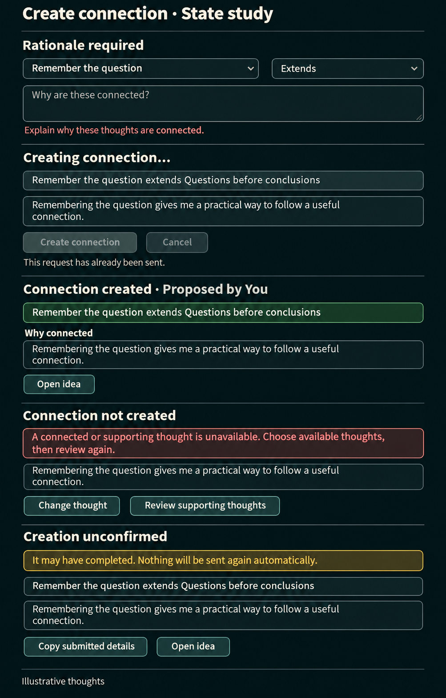

A. In-place workspace
Search and relationship stay visible together. Best for comparing candidates, with more simultaneous density.


Design handoff finalized: Idea-page entry, optional supporting thoughts and B's guided composition are selected. Mounted-page-only drafts with discard warnings, no reload restoration, and readonly copyable uncertain-save recovery without automatic retry are approved. Shared state-board visuals remain reference-only.
Selected: B. User: “In that case this the guided option will be fine.” Its single-column flow keeps Idea context and makes direction a full sentence.
The unchanged “Keep the original words” example is a poorly named source thought, not a preservation setting. Clearer source identity is an implementation copy correction within B, not another asset-approval loop. Generated phone sizes are approximate. Read the finalized handoff and implementation checks for thought-loom-rry.
Alternative specimens: required-rationale validation, pending submission, confirmed creation, unavailable referenced material, and unconfirmed creation. An unknown outcome never offers automatic resubmission or a reliable Check/Retry promise.

